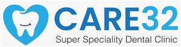
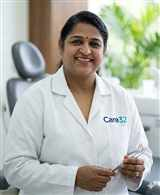
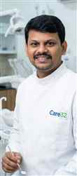

Kids Dentistry
Gentle dental visits, preventive care and child-friendly treatment planning for growing smiles.

Call +91 82 82 82 1409Family dental care in Kukatpally, Hyderabad
Advanced, gentle and transparent dentistry for children, adults and families, led by experienced specialists with hospital-grade sterilisation and modern digital dental technology.


Digital X-rays, CAD/CAM crowns and laser treatment tools in a calm family setting.
Complete dental care
Care32 brings cosmetic dentistry, kids dentistry, orthodontics, dental implants, root canal treatment and smile makeovers together in one approachable clinic in Kukatpally.
Gentle dental visits, preventive care and child-friendly treatment planning for growing smiles.
Precise diagnosis and tooth-saving care for pain, infection and complex dental cases.
Implant consultation, digital X-ray planning and natural-looking tooth replacement options.
Metal braces, ceramic braces and clear aligner therapy with orthodontic precision.
Meet your specialists
BDS - Cosmetic Dental Surgeon
Specialist in Kids Dentistry, Tooth Extractions, Root canal, dental implants, smile makeovers and prosthodontic rehabilitation with over 20+ years of clinical experience in Hyderabad.
BDS, MDS - Orthodontics
Expert in metal braces, ceramic braces, and clear aligner therapy. Transforms smiles with precision orthodontic treatment.
Safety and technology
Digital X-rays, CAD/CAM crowns, and laser treatment tools.
Sterilized instruments, single-use disposables and strict cross-infection control protocols.
Instant, precise diagnostic images for implants and complex cases.
Computer-designed, milled zirconia crowns.
Your Care32 Journey
Here is what to expect when you visit Care32 for your dental consultation.
Book your appointment online, via WhatsApp, or call +91 82 82 82 1409 in 60 seconds.
Meet your specialist for a detailed examination, X-rays and treatment discussion with clear guidance.
Receive a transparent treatment plan with timeline and costs explained upfront.
Relax while our experts deliver precision treatment for a healthier, happier smile.
Still Have Questions?
We are here to help you make the right choice for your dental health. Choose a valid clinic slot and send your appointment request on WhatsApp.
Mon-Sat: 10:00 AM-2:00 PM, 5:30 PM-8:00 PM
Sun: 10:30 AM-12:30 PM
Care32 FAQ
Yes. Care32 uses instant digital X-rays for precise diagnostic images, implant planning and complex cases.
Yes. Dr. Sandeep provides orthodontic care including metal braces, ceramic braces and clear aligner therapy.
Yes. Care32 provides kids dentistry, preventive care and specialist dental treatment for the entire family.